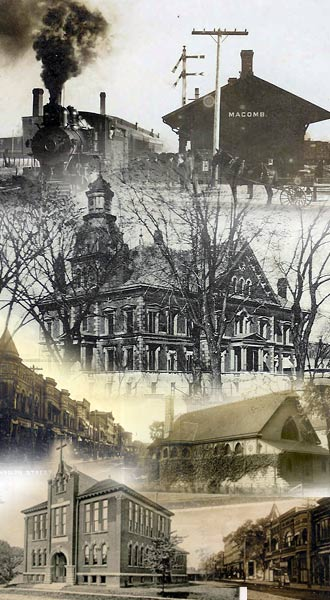
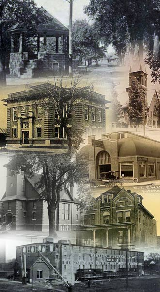

- Pre-quel Minutes
Monday, November 14, 2005
- This building is described glowingly. "The edifice is one of the ornaments of the city of Macomb presenting in its front view the appearance of a palatial mansion of some railway magnate." Quoting further "The architectural design is modern, very neat and well proportioned, presenting on a whole, a light, cheerful appearance." This building as wonderful as a palatial mansion, was the new McDonough County Jail built in 1876. History of McDonough County 1885, pages 235-236.
-
- Tuesday, November 15, 2005
- D.G. Tunnicliff was one of Macomb's best known attorneys. He practiced law in Macomb from 1854 until his death. He was appointed by Governor Oglesby as one of the justices of the Illinois Supreme Court filling an unexpired term. History notes the firm of Tunnicliff and Bacon as one of the leading firms in the county - its measure of success - they had the largest law library in Macomb. History of McDonough County 1885, page 393.
-
- Wednesday, November 16, 2005
- I remember the first Decoration service, May 30, 1869. The date fell on Sunday and there were some who objected to holding the service that day. It was held in the M.E. Church. It was not very largely attended, being a new thing, and the people had not yet fallen in with the beautiful service. History and Reminiscences of Alex Holmes, page 36.
-
- Thursday, November 17, 2005
- The first birth in the town of Macomb was that of a son, born to Moses Hinton in 1832. Times were hard, winters cruel but people kept records and the first death in the town of Macomb was also noted. It was that same son born to Moses Hinton. McDonough County History 1885, page 1155.
-
- Friday, November 18, 2005
- The McDonough Independent was the first paper issued in Macomb, debuting on September 12, 1851. The paper was published on Fridays in a six column folio. Wheat was quoted at 50 cents per bushel, butter was 10 cents a pound and coal was 8 cents a bushel. And the cost of a subscription to the McDonough Independent - $2 per year. McDonough County History 1885, page 502.
-
- Monday, November 21, 2005
- John O.C. Wilson, born in 1804, was one of the pioneers of Macomb and served as a justice of the peace and a school commissioner. He was a humble farmer and good business man. He was the 'right kind of material for public places of honor and trust and called upon to fill many offices in the gift of the people.' He died in 1880, but this humble man judged honorably and trustworthy was chosen the first Mayor of Macomb. McDonough County History 1885, page 376.
-
- Tuesday, November 22, 2005
- Local legend has it that in the early days of Macomb and McDonough County merchants would frequently refer naive young people wanting to tie the knot to the nearest postmaster saying that he was "duly government authorized." Sometimes a new postmaster would admit he didn't know all the rules and regulations but "if the merchant said he could, he supposed it was so." No official records record the matrimonial vows, but folklore says that many were pronounced "Mr. and Mrs. as provided by United States Postal regulations." McDonough County History 1885, page 222.
-
- Wednesday, November 23, 2005
- In 1928 the Macomb City Directory lists Hainline Memorial with the motto Ambulance Service Always Available, McClellan Book Store sells stationery, fountain pens and greeting cards. Druggist P.D. Roark, has Candies, cigars, toilet articles and Kodaks for sale. The business phone number is 9 Main. Times were simpler and no area code was required. 1928 Hoffman City Directory.
-
- Thursday, November 24, 2005
- The most current census had the population of Macomb at 10,592. There were 10 furniture and appliance stores, 4 department stores and 5 shoe stores. McArthur Grade School was listed as New and two hospitals had a total of 150 beds. The information from a brochure printed in 1956.
-
- Friday, November 25, 2005
- Summer Session of the State Normal School would begin on June 16 and run for 6 weeks until July 24. J.W. Henninger was President of the school that would be Western Illinois University. The year was 1903. Tuition was $6.
-
- Monday, November 28, 2005
- Report filed to the Secretary of War, November 15, 1814.
The militia behaved with great spirit after the first day and the volunteers of Vermont were exceedingly serviceable. Our regular troops, kept at their work day and night strengthening the defenses and evinced a determination to hold out to the last extremity. I have the honor to be Alexander Macomb. Report from General Alexander Macomb - www.cronab.demon.co.uk/lake3
-
- Tuesday, November 29, 2005
- C.V. Chandler was a prominent name in Macomb history. He was born here in 1843 and served in the Civil War. He was a bank president and business leader. One of his best known buildings was the Opera House at the southwest corner of Carroll and Lafayette. It was constructed in 1872 and served as the city's entertainment and culture center for almost fifty years. But this glittering edifice that could seat 800 and was beautifully decorated with a main floor and gallery was truly constructed on humble beginnings. The Opera House was built on the site where C.V. Chandler was raised. Images of the Past in McDonough County, Macomb Eagle - 10/19/04
-
- Wednesday, November 30, 2005
- Growth and development in the mid 1800's was measured a little differently than we do today. In 1856 McDonough County had 29,453 hogs; 5,762 horses; 2,252 clocks and watches; and 11 pianos. 5 years later prosperity was measured again. In 1861 there were over 47 thousand hogs, over 8 thousand horses and 21 pianos. History of McDonough County 1885, pages 57 & 58.
-
- Thursday, December 1, 2005
- Abraham Lincoln visited Macomb, October 26, 1858. W.H. Champ, who was also born in a log cabin just south of Macomb, was there to hear Lincoln speak. It was a rainy day and the streets muddy. Everyone stood to listen because the wooden seats were too wet to use. Mr. Champ remembers Lincoln as a rapid talker who hit the nail on the head. Mr. Champ also remembers the day for another important event. It was the day he bought the first overcoat he ever owned. Macomb Daily Journal, October 26, 1914.
-
- Friday, December 2, 2005
- John Baker was the first resident of the City of Macomb and erected a cabin in 1830. Mr. Baker had been a minister of the Baptist church and was the first clerk of the county. His home served as the county building until 1831 when commissioners ordered a courthouse to be built of hewn logs with oak plank floor, good batten door, gutters and eaves. Mr. Baker's home was also the only residence located on the present site of the city. History of McDonough County 1885, page 87.
-
- Monday, December 5, 2005
- In 1886 Macomb had its first fire department - the Hook and Ladder Company. The only piece of equipment was a hand drawn wagon loaded down with buckets. Those buckets could be filled with water whenever the cry of "fire" was raised. There was no fire alarm system in 1886, the members of the hook and ladder company could hear the fire cry almost anywhere in town. Remember When edition, October 6, 1993.
-
- Tuesday, December 6, 2005
- In 1895 the Macomb Fire Department was charted and purchased a new chemical wagon to put out fires. Unfortunately they had no horses to draw the wagon. But they came up with an agreement with local draymen. At the cry of "Fire" the first drayman to get to the fire house and get hooked up to the hose wagon, draw it to the fire and back again would be paid. It was very competitive and often fist fights broke out among horse team owners. The princely sum for answering the fire call and supplying the horses was $5. Remember When edition, October 6, 1993.
-
- Wednesday, December 7, 2005
- Macomb got its first physician when Dr. J.L. Shuff came to town in 1831 or 1832. He came from Lexington, Kentucky and was said to be a fair practitioner. But Dr. Shuff didn't stay long and left in the spring of 1833. The reason given for his departure "the County was entirely too healthy for him." History of McDonough County 1885, page 407.
-
- Thursday, December 8, 2005
- Cooking in the kitchen as a Macomb pioneer woman was light years from today's microwave. In the fall and early winter, cooked pumpkin was added to dough for flavor. Venison and ham were fried and grains of corn made a frugal meal. Honey abounded in the woods. Measurements were anything but precise. The description for hoe cake says - take as much as could conveniently be held in both hands. History of McDonough County 1885, pages 73 & 74.
-
- Friday, December 9, 2005
- April 26, 1831 was an important date in Macomb history. The plat of the original town was filed for record by county commissioners James Clarke, James Vance and John Hardesty. The name of the city was spelled McComb. History of McDonough County 1885, page 227.
-
- Monday, December 12, 2005
- Thomas Beard was the first merchant to deal exclusively in hardware in Macomb. He came to Macomb in 1834 or 1835 and was a tinner by trade. Later on he put in a stock of goods. He died in Macomb, April 1878. He was the first person to make a business of selling stoves. History of McDonough County 1885, page 1061.
-
- Tuesday, December 13, 2005
- Thomas T. Smithers, Jr. came to Macomb by way of Rushville. He served in company D 28th Illinois Infantry and married in 1850. He and his wife Sarah had 13 children. To support the family Smithers worked as a mason and engaged in making mortar. History credits him with mixing the mortar for nearly every brick structure in Macomb.
-
- Wednesday, December 14, 2005
- Alexander Holmes began his business and in September of 1874 it was located on the corner of Washington and McArthur. They processed 80 gallons per hour. Demand exceeded supply and in 1875 the firm processed one hundred and twenty gallons an hour. He sold both wholesale and retail. Mr. Holmes manufactured vinegar. History of McDonough County 1878, page 626.
-
- Thursday, December 15, 2005
- Clothing was very plain and simple during the pioneer days. In summer everyone went barefoot. Buckskin moccasins were much worn. Boys of 12 or 13 never even thought about wearing anything on their feet, except during the 3 or 4 months of the coldest weather in winter. Boots were unknown until a later generation. History of McDonough County 1885, page 75.
-
- Friday, December 16, 2005
- Peter Hale was among the settlers in 1830. He erected a cabin just west of where Macomb now stands. The cabin stood near the site of the old graveyard. The location of Mr. Hale's cabin gave an indication for his future. Mr. Peter Hall became the first coroner of the county. History of McDonough County 1885, page 91.
-
- Monday, December 19, 2005
- On April 26, 1831, the first sale of public lots in the new town of Macomb was made. William Edmonston was appointed as commissioner for the sale of all lots and acted as auctioneer. But few sales were made and the amount realized was small. History of McDonough County 1885, page 206.
-
- Tuesday, December 20, 2005
- In June of 1831, the 3 magistrates districts were made election precincts for the upcoming congressional election in August. For this election, the judges were allowed one dollar per day and the clerks one dollar and a shilling. History of McDonough County 1885, page 206.
-
- Wednesday, December 21, 2005
- In 1881 William Prentiss was elected mayor of Macomb. He was a man of personal popularity and steady habits and won contrary to the expectations of nearly, if not quite all, voters of the city. Mr. Prentiss was the first democratic mayor in 21 years and only the second Democrat to ever hold the office. History of McDonough County 1885, page 394.
-
- Thursday, December 22, 2005
- The Macomb Journal surveyed builders in the town because they wanted to publish a complete list of businesses erected and improved upon. They published a list of all construction jobs amounting to $11 or more. Fifteen public buildings and businesses were listed. This was the building boom for the year 1889. Macomb Journal, January 16, 1890, page 5.
-
- Friday, December 23, 2005
- The Fort - the first and only drive-in movie theater operated from 1950 to 1980 on the west side of Macomb. On opening night the movie shown was a western - Stampede. When the last film lit the screen in September of 1980, patrons saw a double feature - The Happy Hooker Goes to Hollywood and the Happy Hooker Goes to Washington. The stars on the silver screen the night the drive-in closed - Joey Heatherton and George Hamilton. Macomb Eagle - June 25, 2004.
-
- Monday, December 26, 2005
- Two acres of land were sold by Robert Garrett to three McDonough County commissioners on July 29, 1836 for use as a public burying ground and for that use only. This is the Old Macomb Cemetery on Wigwam Hollow Road. The two acres sold for $20. In 1855, at the age 85, Robert Garrett died and was buried in the land he sold for use as a cemetery. Images of the Past - Macomb Eagle, Tuesday, September 28, 2004.
-
- Tuesday, December 27, 2005
- The description reads - There are many fine and substantial brick buildings to be seen upon the business thoroughfares and many costly and elegant residences in the other portions of the city. An abundance of trees adorn the streets, which in summer afford a grateful shade and enhance the beauty of the place. The location is healthy; the inhabitants of a class possessing rare intelligence and culture. The description is for the City of Macomb 1885. History of McDonough County 1885, page 1049.
-
- Wednesday, December 28, 2005
- One of McDonough County's early settlers was James Fulkerson and his family in 1832. On their arrival here, they pitched a tent, and one morning a bear made its appearance. The bear was soon captured and the family had 200 pounds of meat and a fine bear skin overcoat. History of McDonough County 1885, page 551.
-
- Thursday, December 29, 2005
- The Macomb Library opened on April 8, 1882 with Miss Mahala Phelps as librarian. It was open one day a week on Saturday afternoon. Today the library is open 7 days a week and answers more than 13,000 reference questions per year. History of McDonough County 1885, page 1126 and Dennis Danowski, Macomb Public Library.
-
- Friday, December 30, 2005
- John Campbell arrived in Macomb in August of 1831. He was an important man in both his time and history. He built the first store, the first frame house, the first three school houses and the first public hall in Macomb. He was the first postmaster in the county and the first county clerk. His eldest daughter, Mary Eliza, was the first female child born in the city of Macomb. Mr. Campbell also drew the original plat of the town and named every street. History of McDonough County 1885, page 281.
-
- Minutes Celebrating the 175th Birthday of Macomb
Monday, January 2, 2006
- The earliest newspaper photograph of a local event was a picture of the first rural free delivery team. The photo featured the five letter carriers and their horses and carriages lined up outside the Post Office on Carroll Street. The date for the photo taken was November 1, 1901. Images of the Past, Pictorial History of McDonough County, Illinois, page 1.
-
- Tuesday, January 3, 2006
- In 1918 Western Illinois State Normal School has a football squad. 11 men played, competed, won and lost. Equipment was not the helmet and padded uniforms we see today. Even the field was unusual and the goal posts were stripped tree trunks with a nailed-on crossbar. Pictorial History of McDonough County, Illinois, page 61.
-
- Wednesday, January 4, 2006
- The businesses houses were superior to those of any city of its size in the State. Brick blocks almost entirely surround the square, many of them possessing a very handsome exterior and interior appearance, and all of good size and adapted to the trade of the place. There is a handsome opera house capable of holding about twelve hundred people. The year was 1878. History of McDonough County 1878, page 612.
-
- Thursday, January 5, 2006
- In 1866 when the second ward high school building was completed, Professor H.H. Smith was hired as principal at a salary of $1,500 per year. The dollars were very different and bitterly opposed by many in Macomb who thought it an outrageous sum to pay a man for only six hours of work per day. History of McDonough County 1878, page 613.
-
- Friday, January 6, 2006
- One of the duties of the police has been to arrest all suspicious characters. None were allowed to remain in the city more than one night. Should a tramp make an appearance in the city, he is at once escorted to the calaboose if night is approaching, or warned away if it is the early part of the day. During the year, over three hundred suspicious characters were given lodging and hurried off bright and early the next morning. The year was 1878. History of McDonough County 1878, page 611.
-
- Monday, January 9, 2006
- The second Thursday in October was set as the date for the first county fair in 1855. It exceeded expectations. The weather was delightful and the attendance on both days was very large. Exhibits included Price's washing machine, some colorful pumpkins, handiwork, and Cy Lawson's 800 pound pig. History of McDonough County 1878, page 283.
-
- Tuesday, January 10, 2006
- Accommodations in Macomb in those early days were not so great as they are now. William Shannon and myself were once summoned to attend court as witnesses and when we arrived, the houses were all full and we could get no place to stop. We were compelled to go out of town a short distance and crawl under a hay stack to sleep during the night. Reflections of John Wilson, 1877. History of McDonough County 1878, page 586.
-
- Wednesday, January 11, 2006
- The financing of the city fathers was deemed excellent in written reference 1876. Many capitalists wanted to purchase bonds, but no bonds were issued by the city except for the erection of the high school building in the second ward. And of that bond only $4,500 was out standing. To quote the Mayor of the time "the city is governed on the principle 'pay as you go'." History of McDonough County 1878, page 610.
-
- Thursday, January 12, 2006
- The mail was handled quite differently in the early days of Macomb. Arrangements were made by James Campbell to have the mail delivered from Rushville to him personally. He would be responsible for the payment of the postage. It is said that Mr. Campbell placed the letters he received in his hat and handed them out to people as he met them in the community and on the streets thus delivering the mail. History of McDonough County 1878, page 37.
-
- Friday, January 13, 2006
- John Baker applied to the County April 12, 1831 for a license to keep a tavern in Macomb. The price for such a license was the princely sum of six dollars and fifty cents. A few days after taking the license Baker formed a partnership with Samuel Bogart. Together they formed Bogart, Baker & Co., a firm engaged in selling dry goods, groceries, whiskey and tobacco. But both men had other occupations as well. John Baker was a Baptist preacher and Samuel Bogart was a Methodist preacher. History of McDonough County 1878, page 29-30 and page 206.
-
- Monday, January 16, 2006
- J.H. Phelps was a tailor in Macomb in 1877. He learned to be a tailor when he was only 17 and was always in business. In 1882 his business was in the Opera House block where he had a room 20 by 65 and a stock of about three thousand dollars. He employed four men. He spent nearly his entire life in Macomb and was a native of McDonough County born Valentine's Day in 1847. History of McDonough County 1885, page 1061.
-
- Tuesday, January 17, 2006
- In June of 1884 the tax levy supporting Macomb schools was $12,000. The school library and apparatus was valued at $750. The highest wages paid any male teacher was $120 per month and the lowest $85 per month. There were two brick and two frame school buildings. Total number of children of school age in Macomb was 1,303. More than half, 846 were enrolled in the schools. History of McDonough County 1885, page 1122-1123.
-
- Wednesday, January 18, 2006
- The first store in the city of Macomb was begun by James M. Campbell in the spring of 1831. The store was a small hewn log cabin 18 foot square. Mr. Campbell put in a stock of dry goods, groceries and hardware. Mr. Campbell at this time also served as clerk of the circuit court, clerk of the county commissioners court, county recorder, notary public and postmaster. History of McDonough County 1885, page 1056.
-
- Thursday, January 19, 2006
- Macomb's Greatest Need - A New and Modern Hotel - was the campaign begun by local attorney and businessman Andrew Hainline in 1925. Public stock was sold to support the effort and more than two hundred thousand dollars was raised by the end of the year. Two years later on June 24, 1927 formal dedication of the Lamoine Hotel took place. The building still stands today at the corner of Randolph and Carroll, a testament to the vision and spirit of Macomb in the 1920's. Images of the Past - Macomb Eagle, Tuesday, March 30, 2004.
-
- Friday, January 20, 2006
- The Macomb City Directory of 1893 lists businesses that are very different than today. There were seven blacksmiths and twelve addresses that were noted as boarding houses. Four companies were buggy and wagon manufacturers, and three flour mills were listed. Four companies made harnesses and five sold millinery. Macomb had two shoemakers and one broom manufacturer. Macomb City Directory 1893.
-
- Monday, January 23, 2006
- The Patrons of Husbandry was an order banded together for the social, mental, moral and material improvement of the agriculturist. Many farmers belonged to this group and a great mass meeting and celebration was held at the fair grounds in Macomb, July 4, 1873. It was the largest meeting of any kind ever held in the area. The procession of people extended for four miles. History of McDonough County 1885, pages 363-364.
-
- Tuesday, January 24, 2006
- The advent of the circus always brought a crowd. People came from every nook and cranny to hear the funny sayings of the clown for which they spent their hard earned money. To Quote "Without newspapers, without telegraphs, without railroads, with a thinly settled country, with none of the means of enjoymnent afforded at present day, their life was indeed hard, and the necessity of a little relaxation and amusement, even if only that afforded by the silly jokes of the professional harlequin, was an absolute necessity." The year was 1878. History of McDonough County 1878, page 609.
-
- Wednesday, January 25, 2006
- There are four entrances. Each of these open from a portico constructed from iron and stone and reached by fine, wide stone steps. The building is surmounted by a fine belfry. It contains a large town clock, the bell of which weighing fifteen thousand pounds, peels forth the hours as they pass. The entire frame work of the belfry is constructed of wrought iron. From this belfry a fine view is obtained of the surrounding country for many miles, it being the highest available point in the county. No longer the highest point, but certainly esteemed as an architectural jewel of Macomb, the McDonough County Courthouse. History of McDonough County 1885, pages 233-234.
-
- Thursday, January 26, 2006
- The first sale of lots in Macomb was in May of 1831. Eleven sales were made for $4,903.55. Cost of the same was $186.88. In 1878 assessed value of this same property was over $600,000. History of McDonough County 1878, page 607.
-
- Friday, January 27, 2006
- The weather continues to be unfavorable to the rapid progress of the work, yet it goes on whenever the actual falling of rain does not drive the workmen to seek shelter from the storm. The foundation walls are completed on the east and west and north. Stone continues to arrive and we notice that a few brick have been delivered upon the ground. Mr. Wallbaum seems to be in good spirits and says that he is going to make our people a good court house, whether he makes any money out of the job or not. Macomb Journal, July 16, 1890, page 5.
-
- Monday, January 30, 2006
- In 1831 prices to govern inn-keepers were set. Each nights lodging was 12 and a half cents. A half pint of French brandy was twenty-five cents and a half pint of peach brandy was 18 and three quarters cents. History of McDonough County 1885, page 206.
-
- Wednesday, February 1, 2006
- In 1857 cholera raged for a time striking terror to the heart of many. Men strong and hearty in the morning, laid in the embrace of death before night. Men at the risk of their own lives, went to the house where death had entered and quietly removed the corpse and buried it without giving notice of the sad event to terrified citizens. This was done to control the fear of the people. It is thought that this was the only real epidemic that ever visited the town. History of McDonough County 1878, page 610.
-
- Thursday, February 2, 2006
- In June of 1832 a battalion of men was raised in the area to serve in the Black Hawk War. They organized in Macomb. They guarded the frontier and were out 86 days. They drew their rations, ate heartily, played euchre and visited the friendly Indian camps. Each man furnished his own horse. They received 86 cents per day. Each man also received 80 acres of land. History of McDonough County 1878, page 283.
-
- Tuesday, February 7, 2006
- Books and stationary, $3.00; instruction, $2.00 per month; $5.00 must be sent with enrollment. This pays for the books and one month's instruction. On the first of each month $2.00 must be remitted to pay for instruction during that month. A two-cent stamp must be enclosed with each lesson to pay return postage. This was the Bookkeeping course by mail at Western Illinois Normal School and Business Institute in 1900. Western Illinois Normal School and Business Institute, 1900, page 6.
-
- Wednesday, February 8, 2006
- In 1880, the Runkle brothers began operating the clay bank for Eddy & Co. of Macomb. The firm changed hands several times until it came under the operation of William Stone. In 1884, 2,310 tons of clay were taken out for Eddy & Co., while other potteries got about 2,250 tons. It sold at an average of 20 cents per ton. History of McDonough County, 1885, page 998.
-
- Thursday, February 9, 2006
- "Section 1 - It shall be unlawful for any person or persons in said city to kill, cripple, or injure any squirrel or squirrels in the city of Macomb, or to throw or toss any stone, clod, stick, or other missile, at any squirrel or squirrels in said city, or to take, carry away, or confine any squirrel or squirrels that are or may be in the court house yard in said city, or in any street, alley, or public place in said city." Macomb City Ordinances, 1897, page 75.
-
- Friday, February 10, 2006
- The Philomathian Literary Society was a popular one in 1900. It held session once a week and provided valuable aid in composition, debate, elocution, and parliamentary rules. This society enabled the student to practice what he learned, and to utilize more fully the knowledge he possessed. It was a discipline that always proved valuable in the real duties of life, giving dignity and self-reliance to the young ladies and gentlemen who labored in it. Western Illinois Normal School & Business Institute, 1900, page 20.
-
- Monday, February 13, 2006
- "There are many fine and substantial brick buildings to be seen upon the business thoroughfares, and many costly and elegant residences in the other portions of the city. An abundance of trees adorn the streets, which in summer afford a grateful shade and enhance the beauty of the place. The location is healthy; the inhabitants of a class possessing rare intelligence and culture, and the society of the most refined and desirable character." Description of Macomb, 1885. History of McDonough County 1885, page 1049.
-
- Tuesday, February 14, 2006
- David Clarke, son of John and Ann Clarke, was born in 1799. At age 22, he compiled a book of hymns that was adopted by the Baptist Church. In 1830, Clarke and his family moved to Macomb where he ran the local tavern. He served as the town constable for four years and a justice of the peace for eight. During his first four years as justice of the peace, Clarke tried over 900 cases, a very large docket at that time. History of McDonough County 1885, pages 1051-1052.
-
- Wednesday, February 15, 2006
- In the spring of 1842, Isaac Opp began a journey from Stephenson County, Illinois to visit his sister in Cuba, Illinois. He set a course on a raft with four Mormons down the Pecatonica River, to the Rock River, to the Mississippi River. Upon reaching Nauvoo, Opp started out on foot, alone, to Carthage, some 21 miles with no homesteads in between. By chance, a carriage was traveling from Carthage to Macomb. Opp caught the carriage to Macomb accompanied by three lawyers and one Supreme Court Judge. The Supreme Court Judge was Stephen A. Douglas. History of McDonough County 1885, page 107.
-
- Thursday, February 16, 2006
- John Ames and his wife Martha came to Macomb, in 1864, by way of Kentucky and Indiana. The Ames family had seven children. Upon moving to Macomb, Ames paid $20 per acre of farmland, which he later sold for $50 per acre. Ames' farm grew to 320 acres, enough to be divided between himself and his seven children. He was one of the first farmers to use drain tile, laying 2 inch tile. History of McDonough County 1885, page 996.
-
- Friday, February 17, 2006
- "Here every student is provided with a fine office desk. These desks are made of oak highly polished; have rolling tops and are provided with locks. They were especially designed and manufactured for this institution. Every one who sees them says they are the most convenient, and at the same time the most beautiful commercial school desks. Besides having the very best furniture that can be produced, we have rooms that were planned for commercial college use. The lighting and ventilation are good. We enjoy advantages of steam heat, electric lights and drinking water in the building. In short, we have all the modern advantages." This is a description of the Western Illinois Normal School & Business Institute in 1900. Western Illinois Normal School & Business Institute, 1900, page 12.
-
- Monday, February 20, 2006
- "Section 5 - The odd numbers shall be used on the east side of all streets and avenues running north and south in the city of Macomb, and upon the south side of all streets and avenues running east and west in said city. The even numbers shall be used upon the west side of said streets and avenues running north and south, and upon the north side of all said streets and avenues running east and west in said city." The new ordinance for house numbering in 1897. Macomb City Ordinances, 1897, page 152-153.
-
- Tuesday, February 21, 2006
- The school was located at Macomb August 14, 1900. The campus comprises nearly sixty acres and was presented to the state by the citizens of Macomb and the vicinity. It has been carefully planned. Many trees and much shrubbery have been set out. Drives and walks have been put in so that it has now grown into a place of very great beauty. The main building was opened for school work September 23, 1902. It cost over $400,000. The description of Western Illinois State Teacher's College. Western Illinois State Teacher's College: Campus and Building Views, page 3.
-
- Wednesday, February 22, 2006
- James R. Patterson came to Macomb in 1856 by way of Rushville. Since arriving in Macomb, Mr. Patterson was in the business of moving buildings. He was the only person in town to make that a business. History of McDonough County 1885, page 1110-1111.
-
- Thursday, February 23, 2006
- The Macomb Calendar Clock Company was organized on February 22, 1882 with a capital stock of $20,000 and the patent of the inventor. The committee purchased the new and improved machinery to manufacture the first calendar clock, a brand new design. They began operations with a staff of 12 to 15 men. However, in July 1883, operations were suspended, having made 1000 clocks, but not selling one. History of McDonough County 1885, page 1106-1107.
-
- Friday, February 24, 2006
- The Macomb Bottling Company was located on the corner of east Jackson and Monroe Streets. It was opened in 1883 by W.A. George and D.N. Bryan. The company moved to the square, rented space, and eventually was sold to D.W. Bryan, the brother. The machinery he used daily was worth $2700. D.W. Bryan's bottling company manufactured lemon, sarsaparilla, and strawberry soda water, birch beer, Buffalo mead, Belfast ginger ale, Little Daisy, cream soda, and champaign cider. History of McDonough County 1885, page 1103.
-
- Monday, February 27, 2006
- The Opera House of Macomb was erected by C.V. Chandler, on North Lafayette Street, in March 1872. Store rooms occupied the first floor of the block, while the opera house was located on the second floor. The entire building was 60x80 feet in size and built of brick. The auditorium seated 800 people. The cost to build the opera house was approximately $31,000. It opened for business in April 1873 and presented Edwin Wight's Theatrical Troupe. History of McDonough County 1885, page 1106-1107.
-
- Tuesday, February 28, 2006
- "In the Business Department there is practice in the following kinds: Wood and Coal business, Wholesale Flour Business, Wholesale and Retail Furniture Business, Tanning Business, Boot and Shoe Business, General Merchandise Business, Joint Stock Companies and Corporations, and Banking. These lines of actual business are kept as full and complete as may be necessary to make a very thorough course." The year was 1900 at Western Illinois Normal School and Business Institute. Western Illinois Normal School and Business Institute, 1900, page 11.
-
- Wednesday, March 1, 2006
- In October 1883, Mr. Adair and C.V. Chandler began operations of their creamery, located in Macomb Township. They commenced business by using the milk of 40 cows, but increased the capacity of business to 60 cows, plus a large quantity of milk furnished by local farmers. They had eight cream wagons on the road and deployed milk throughout McDonough, Hancock, and Schuyler Counties. The creamery had the capacity for 1,500 pounds per day. The majority of this found its market in Chicago, New York, Philadelphia, and Baltimore. History of McDonough County 1885, page 998-999.
-
- Thursday, March 2, 2006
- In 1880, Frank Runkle discovered a clay bank in the southeast corner of Macomb Township after noticing the clay sticking to the legs of cattle, which crossed the ravine. Frank, Stephen, and William Runkle sunk a well in the bank. After digging 13 feet, they procured an auger and commenced boring. They found potter's clay sandwiched between two layers of rock, and under the rock they struck fire clay. This bank supplied all the clay used by the Macomb potteries and a great deal for the tile works. History of McDonough County 1885, page 998.
-
- Friday, March 3, 2006
- "Macomb is situated in the exact geographical center of McDonough County, at the point of meeting of the four townships of Emmet, Macomb, Chalmers, and Scotland. The line of the Chicago, Burlington & Quincy railroad, passes through it, connecting it with the markets of the world. The many manufacturing establishments which have sprung up within its limits, and the rich and productive agricultural and stock raising country that surround it, are an excellent guarantee of a permanent and solid growth in the future." This was a description of Macomb in 1885. History of McDonough County 1885, page 1049.
-
- Monday, March 6, 2006
- The water rates where no meter was used, were as follows:
Banks were $5.00. A Barber Shop was $4.00. Churches were Free.
A Single Family Dwelling paid $5.00. Hotels, paid per 1 room $1.00.
Ice Cream Parlors were charged $10.00. The Public Library was Free and Restaurants paid $6.00.
The fees were annual and the year was 1897. Macomb City Ordinances 1897, pages 201-203.
-
- Tuesday, March 7, 2006
- The Buckeye Pottery Company of Macomb was established in 1882 by Joseph Pech and sons. They had a capital of $20,000 invested and hired twenty employees. The building was located on Carroll Street near the railroad tracks. Most of their ware was made from clay found within the county limits. History of McDonough County 1885, page 1098.
-
- Wednesday, March 8, 2006
- Among the leading representatives of millinery and dressmaking in Macomb was Mrs. M.F. Jacobs. Mrs. Jacobs established her business in 1858 and located her store front on East Jackson Street. In July of 1872, Mrs. Jacobs moved her store front to the North side of the square in the Bailey's Block. The room she occupied was 14x80 feet in size. Her well selected stock of millinery and fancy articles invoiced $1500 to $2000. History of McDonough County 1885, page 1082.
-
- Thursday, March 9, 2006
- William L. Imes operated the oldest wagon factory in Macomb. He moved to Macomb in 1849 and opened his factory, at Carroll and Edwards. When he first arrived, Imes entered into partnership with C.W. Dallam, and engaged in the manufacturing of threshing machines. In the fall of 1849, Imes, it is believed, built the first threshing machine operated in the state of Illinois. History of McDonough County 1885, page 1100.
-
- Friday, March 10, 2006
- John and Thomas McElrath opened the first furniture and cabinet making establishment in Macomb in 1843. It was told, that in 1849, John Anderson wanted a dozen chairs, and because lumber of the furniture kind was scarce, McElrath and a team went out and cut down a cottonwood tree. From that cottonwood tree, he split out the chair bottoms and had the chairs ready for use in the hotel when court convened. History of McDonough County 1885, page 1096.
-
- Monday, March 13, 2006
- At age 17, B.D. Ingram enrolled himself in the painters trade. In 1866, he opened a shop in Macomb located on North Lafayette Street. Ingram & Sons specialized in sign and ornamental painting, graining, paper hanging, and decorating. History of McDonough County 1885, page 1087.
-
- Tuesday, March 14, 2006
- A well furnished room in a good home and tuition costs between 25 dollars to 30 dollars per term of ten weeks. From $85 to $110 pays for board, tuition and furnished room for forty weeks. From $105 to $130 pays for board, tuition and furnished room for forty-eight weeks. This was the cost of attending Western Illinois Normal School and Business Institute in 1900. Western Illinois Normal School and Business Institute, 1900, page 6.
-
- Wednesday, March 15, 2006
- James W. Brattle settled in Macomb in 1831. In 1834, the commissioners found that the original survey for Macomb was incorrect. Mr. Brattle re-surveyed it, without altering the corners of the blocks, and re-platted it on March 6, 1835. Mr. Brattle served as the county surveyor for many years following, and was said to have run the lines over more land in this county than any other man. History of McDonough County 1885, page 1052.
-
- Thursday, March 16, 2006
- The Macomb Greenhouse and Market Garden was owned and operated by I.L. Pillsbury. He opened the first conservatory, approximately 14x30 feet in dimension, in 1882. The second was erected in 1883 and was approximately 11x60 feet in size, and included hot beds. In all, Pillsbury has approximately 2500 square feet of glass in the establishment. He devoted five acres of his land to the gardening market. History of McDonough County 1885, page 1096.
-
- Friday, March 17, 2006
- $2.00 for the wagon, $1.50 for the plank and timber, two shrouds cost $1.50, handing cords $1.00, and $12 for the gallows. The year was 1885 and the total cost for an execution in McDonough County was $30.25. History of McDonough County 1885, page 342.
-
- Monday, March 20, 2006
- In 1911, the plans for a women's dormitory were underway at Western Illinois State Teacher's College. The building was completed and occupied December 8, 1913 at the cost of $90,000. The dormitory had accommodations for 85 young women. The dining room accommodated 120. This hall was named Monroe Hall, but later changed to Grote Hall. The building was demolished in 1991. Western Illinois State Teacher's College: Campus and Building Views, page 3.
-
- Tuesday, March 21, 2006
- City Ordinance of 1897 on the matter of Impersonating a Fireman: "Section 14 - Any person not a member of the Fire Department who shall impersonate a fireman or officer of the Fire Department at a fire, or while going to or returning from the same, in any way, shall be fined ten dollars for each offense." Macomb City Ordinances 1897, page 124.
-
- Wednesday, March 22, 2006
- A Circus and one side-show cost $75 per day, a pawnbroker was charged $100 per year; selling or giving away cigarettes and cigarette paper was $150. These were the prices of business licenses in 1897. Macomb City Ordinances 1897, pages 141-142.
-
- Thursday, March 23, 2006
- "Section 2 - No person shall, in this city, appear in any public place in a state of nudity, or in a dress not belonging to his or her sex, or be guilty of any indecent or lewd act, conversation or behavior. Every person so offending shall forfeit and pay, for the use of said city, not less than five dollars nor more than fifty dollars for each and every offense." Macomb City Ordinance: Public Morals and Decency 1897. Macomb City Ordinances 1897, page 170.
-
- Friday, March 24, 2006
- "Macomb is situated in the center of one of the most prosperous districts of the United States; is a thriving city of over 6,000 inhabitants. Macomb is celebrated for its prosperity; for its order and quiet; for its industry and morality (there not being a single saloon in the town); for its excellent YMCA; for the healthfulness of the locality, and for the beauty and elegance of its square and streets." The year is 1900 and the description is from the Western Illinois Normal School & Business Institute Catalogue. Western Illinois Normal School & Business Institute 1900, page 19.
-
- Monday, March 27, 2006
- One of the early locations for the McDonough County Jail was the Park House Hotel. The Park House served as county jail from 1856 until the completion of the new county jail in 1876. This brick structure was 60 square feet, two stories high, and had 10 sleeping quarters. It was well equipped for a county jail, but had a poor security system which allowed many prisoners to find escape routes. History of McDonough County 1885, page 1094.
-
- Tuesday, March 28, 2006
- "Macomb is situated in the center of one of the most prosperous districts of the United States and is a thriving city of over 6,000 inhabitants. Macomb is celebrated for its prosperity; for its order and quiet; for its industry and morality (there not being a single saloon in the town); for its excellent YMCA; for the healthfulness of the locality, and for the beauty and elegance of its square and streets." The year is 1900 and the description is from the Western Illinois Normal School & Business Institute Catalogue. Western Illinois Normal School & Business Institute 1900, page 19.
-
- Wednesday, March 29, 2006
- "Macomb is one of the best college towns in Illinois. It is not large enough to have those attractions which distract the mind of the students, nor small enough to be monotonous. It is in every way calculated to be a pleasing and safe place for students." The description from the Western Illinois Normal School & Business Institute Catalogue. Western Illinois Normal School & Business Institute 1900, page 19.
-
- Thursday, March 30, 2006
- "Every student will be required to bank just as businessmen do. Every business transaction at the College Bank is performed in the same manner as at any national bank. Before graduating every student is required to spend some time in the College Bank as teller, bookkeeper, cashier, etc." - College of Business, Western Illinois Normal School & Business Institute 1900, page 13.
-
- Friday, March 31, 2006
- The common curricula at Western Illinois Normal School & Business Institute in 1900 was different than today. The student made careful studies in derivation, meaning, diacritical marking, use and pronunciation of words. The general rules of spelling, rules of possessive and plural forms, and rules for writing compound words were carefully taught. Homonyms, synonyms, antonyms, paronyms, etc., were carefully taught by specially arranged lessons. The students were studying orthography and ortheopy, the study of speaking and the study of pronunciation. Western Illinois Normal School & Business Institute 1900, page 8.
-
- Monday, April 3, 2006
- John J. Keaton was hired to make the first survey of Macomb for the sum of $35. David Clarke and John Baker were hired to carry the chain for 50 cents a day. William McDonald received 62 1/2 cents per day for driving the stakes into the ground. This work was considered more difficult than carrying the chain. According to the bills and records of the County Commissioner's Court, the wages paid to a laborer at this time was between 50 cents and a dollar a day. The year was 1831. History of McDonough County 1878, page 28.
-
- Tuesday, April 4, 2006
- In 1908, baseball was a popular sport throughout the United States. Citizens of Macomb had a special appreciation for baseball. Macomb had its own professional baseball team, the Macomb Potters. The Potters' claim to fame was a chance to play the Chicago Cubs. The Potters lost 6-0 and 5-0. Images of the Past: A Pictorial History of McDonough County, Illinois, 1996, page 100.
-
- Wednesday, April 5, 2006
- William Randolph was one of the best known citizens of early Macomb. Randolph built the famous Randolph House Hotel, which was located on the east side of the square. He was an active member of the community as one of the first alderman of the city, elected sheriff three times, served two terms in the Illinois House of Representatives, and served as the McDonough County Clerk. He was an active Republican who entertained Abraham Lincoln during his 1858 visit to Macomb. William Randolph was killed during a gunfight in Blandinsville while trying to uphold the Civil War draft laws. The year he died was 1864. Images of the Past: A Pictorial History of McDonough County, Illinois, 1996, page 111.
-
- Thursday, April 6, 2006
- The first Macomb waterworks and water tower were constructed in 1893. The water tower, which stood on the north side of Chandler Park, was constructed of brick for the first 65 feet. The additional 50 feet was topped with a steel standpipe. The water tower had the capability of storing 60,000 gallons of water for the city of Macomb. History of McDonough County, 1997, page 96.
-
- Friday, April 7, 2006
- In 1874, the City of Macomb organized the first Macomb City Police Department under the direction of City Marshal Karr McClintock. By 1899, the police department had grown to a force of four officers. History of McDonough County, 1997, page 96.
-
- Monday, April 10, 2006
- In 1912, Frank Holmes had the vision to build the first ever amusement park on North Lafayette Street in Macomb, Holmes Amusement Park. The park had a lake, a chute-the-chute boat ride, a roller-skating and ice-skating rink, a zoo that boasted a monkey from Madagascar, and swings. Park admissions were 10 cents per person. Images of the Past: A Pictorial History of McDonough County, Illinois, 1996, page 113.
-
- Tuesday, April 11, 2006
- At age 14, William Allbert enlisted in Company H of the 50th Regiment of Illinois and served for 3 years during the Civil War. Upon his return to McDonough County, he learned the pottery trade from his stepfather Jonathon Stoffer. Allbert opened a pottery, Stoffers & Allbert, on the southeast corner of Edwards and Pierce in Macomb in 1876. William Allbert was one of the first potters of Macomb. History of McDonough County, 1997, page 147.
-
- Wednesday, April 12, 2006
- From 1903 to 1932, the Macomb, Industry, & Littleton Railroad ran from Macomb, past St. Francis Hospital, to Industry. A ride aboard this train was unpredictable because the tracks were laid upon an uneven bed, which was cause for many derailments. On one single day, the number of derailments on this track peaked at eleven. This train was also noted for its snail pace and frequent loss of cars. Despite its faults, this track was a primary means of transportation for rural students to receive an education. McDonough County Sesquicentennial, 1826-1976, page 21.
-
- Thursday, April 13, 2006
- In 1831, the first McDonough County Courthouse was built in Macomb. The County Commissioners gave William Southward, the builder, specific instructions on the construction and materials used. The courthouse was to be built of 18x20 hewn logs, with a good white oak plank floor, one door 6 1/2 feet high and 3 feet wide, faced and cased, a good batten door, with heavy iron hinges, one window to have 12 panes of glass and one to have 6, shutters on each window, and good gutters and eaves. For his services, William Southward was paid $69.50. This is McDonough County, Illinois, John Drury, 1955, page 3.
-
- Friday, April 14, 2006
- In response to recent events, a prominent professional man remarked, "I don't know anything but bottles; you can pick them up anywhere; it is outrageous the amount of whiskey sold and drank in Macomb. Every ally and the backyard of all these business houses is full of them." The year was 1890. "Our Road Agent," Macomb Journal, 1890, page 67-68.
-
- Monday, April 17, 2006
- In 1856, Park House served as the McDonough County Jail until the completion of the new county jail in November 1876. This brick structure was 60 square feet, two stories high and had 10 sleeping quarters. It was poorly designed for a county jail because many prisoners found ways to escape. The Park House was bought in 1882 and converted into a hotel. The hotel was located on the south side of the city park. The Park House hotel was short lived. In the late 1880's the hotel was demolished to make way for the expansion of the Chandler block. History of McDonough County, 1885, page 1094.
-
- Tuesday, April 18, 2006
- Every student will be required to bank just as business men do. Every business transaction at the College Bank is performed in the same manner as at any national bank. Before graduating, every student is required to spend some time in the College Bank as teller, bookkeeper, cashier, etc. College of Business, Western Illinois Normal School and Business Institute 1900. Page 13.
-
- Wednesday, April 19, 2006
- The Macomb Eagle cost $1 per year. You could receive the Eagle twice a week and get the St. Louis Republic - three good papers - for only $1.75. The Eagle and the Cincinnati Enquirer could be had for $1.50 a year. This is an advertisement for the Macomb Eagle in 1898. Hampton's Directory of McDonough County 1898, page 88.
-
- Thursday, April 20, 2006
- All of our students live in good private homes. Here they are surrounded by much the same influences as at their own homes. They are not exposed to the coarse and rude influences that often grow up in places where many students live in the same house. There is practically none of that here. Annual catalog 1900 Western Illinois Normal School.
-
- Friday, April 21, 2006
- Macomb census in 1852, the year before I came here was 870. The village became a city in 1856. I have never been to the coast, either east or west. One would be hard to please if not satisfied to live in one of the best states in the Union. One among the best counties in the State, Macomb a city noted for churches, school and hospitals. History and Reminiscences of Alex Holmes, page 82 and 83.
-
- Monday, April 24, 2006
- The City of Macomb, the most beautiful and enterprising town in this part of the state of Illinois, originated 55 years ago, when the beautiful country that surrounds it was just beginning to attract the attention of those in search of homes and the surroundings were as free and wild as the time when the stars of the morning sang anthems of joy at nature's dawn. The year was 1885. History of McDonough County 1885, page 1048.
-
- Tuesday, April 25, 2006
- B.F. Martin became the first furniture dealer in Macomb. He came to Macomb in 1834 and worked hard as a carpenter and cabinet maker. He formed a partnership with his son and they had a business located on West Jackson called B.F. Martin and Son. It required great skill and compassion with this new enterprise for the former carpenter. B.F. Martin and Son was in business as undertakers. McDonough County History 1885, page 1077.
-
- Wednesday, April 26, 2006
- The ad for Palace Drugstore reads - "Better than prayers, have your prescriptions filled at Palace Drugstore. Patients all get well. A. Decker and Brothers of Macomb." The year was 1898. Hampton's Directory of McDonough County 1898, page 96.
-
- Thursday, April 27, 2006
- In pioneer times snakes were numerous. It was common practice, in order to exterminate them, for the men to turn out in companies with spades, mattocks and crowbars, attack the principal snake dens and slay large numbers of them. Some of the fattest of these snakes were taken to the house and oil extracted from them, and their glittering skins were saved as a specific, for rheumatism. History of McDonough County 1885, page 79.
-
- Friday, April 28, 2006
- Indianapolis, Indiana, June 12, 1914
My Dear Mr. Burns - In the Macomb Journal, received this morning, I notice that the monument to General Macomb and Commodore McDonough is to be erected in the east part of the park, which meets with my hearty approval. I would have suggested that location, if anyone would have asked my advice as I am still, as always in the past, in favor of a better and beautiful Macomb. Please accept not only my thanks for your efforts, but also my congratulations for the consummation of your patriotic labors. Yours very truly, C.V. Chandler. Macomb Daily Journal, June 15, 1914.
-
- Monday, May 1, 2006
- The course work included classes in sending, receiving, penmanship, station agent duties, railroad bookkeeping and care of batteries. The courses were for telegraphy. The year was 900 at Western Illinois Normal School. Western Illinois Normal School - annual catalog 1900.
-
- Tuesday, May 2, 2006
- H.W. Gaites will open the Baltimore Lunch at his candy parlors on North Randolph Street on Saturday. The place has been fixed up especially for the occasion, and he has prepared a menu that will tempt the stomach. Soup is ten cents, toast is 5 cents, hot waffles and maple syrup costs 10 cents. The year was 1912. Macomb Journal, December 18, 1912.
-
- Wednesday, May 3, 2006
- The McClellan book store, which has been in the Compton building on the northwest corner of the square, has moved into the corner room of the opera house block, just across the alley from their old location, and are now open and ready for business in their new quarters. The room which they occupy has been completely redecorated, new plate glass front put in, new steel ceiling and many other up to date improvements, making the new store one of the most attractive and best equipped in the city. Macomb Journal, June 28, 1910.
-
- Thursday, May 4, 2006
- Drugs and chemicals of the highest standard and quality will be used in compounding your prescriptions, if you take them to A. Decker and Brothers, 113 South Side Square. The business phone number was 30 and Mr. Decker's home phone number was 95. the advertisement is from 1898. Hampton's Directory of McDonough County 1898, page 106.
-
- Friday, May 5, 2006
- In 1911 a woman's building or dormitory was planned. This building was furnished and occupied December 8, 1913 at a total cost of about $90,000. It contains rooms which will accommodate 85 girls. The dining room will seat 120 persons comfortably. Western Illinois State Teachers' College. This was a description of campus from 1917. Campus Views - Western Illinois State Teachers' College, page3.
-
- Monday, May 8, 2006
- We do not profess to make our students able to read Caesar in ten weeks. We believe this cannot be done properly. The great schools and universities of our country do not do it. In this work, as in all other, we do what we attempt thoroughly. We give as good a three years Latin course as any school. The Roman method of pronunciation is used. This is the Latin class at Western Illinois Normal School 1900. Western Illinois Normal School annual catalog 1900.
-
- Tuesday, May 9, 2006
- The Lamoine River runs through Macomb on the north. It is generally surmised, though not certainly known, that in the very early settlement of this country, when the French Catholics occupied it for the purpose of converting the Indians to the Catholic religion, the priests gave it this name. Lamoine is a French word meaning "the monk." History of McDonough County 1885, page 56.
-
- Wednesday, May 10, 2006
- The wedding was an attractive feature of pioneer life. It was anticipated by both old and young with eager expectation. The marriage ceremony took place in the house of the bride, and then dinner or supper was served. After the meal the dancing commenced and generally lasted until the following morning. During the night's festivities, spirits were freely used, but seldom to excess. History of McDonough County 1885, page 77.
-
- Thursday, May 11, 2006
- The snow fell an average depth of about four feet and remained on the ground for about three months. All kinds of wild game literally starved to death. Before the snow fell the deer were as fat as could be and before it passed away they were so poor they were not fit to eat. Wild turkeys would fall from the limbs of trees. This was the description by James Clarke of the 'big snow' of 1830. History of McDonough County 1885, page 101.
-
- Friday, May 12, 2006
- William Randolph was one of the most important men in Macomb. He had great public spirit and wealth. He laid off for a public cemetery, a tract of land just north of the city, comprising eleven acres, which he christened Oakwood Cemetery. For years the town had felt the want for a suitable place for the burial of the dead. The old cemetery west of town was too small and very inconvenient to the citizens of the place. Mr. Randolph selected the prettiest and most eligible spot adjoining the town for this "City of the Dead." The year was 1856. History of McDonough County 1885, page 273.
-
- Monday, May 15, 2006
- One of Macomb's earliest and most notable settlers was Mr. Campbell. In the spring of 1831, on the first day of April of that year he reached Macomb, which then had a population of four persons - Rev. John Baker, a Baptist minister, his wife and two little daughters. Mr. Campbell's arrival caused the population to swell to five. History of McDonough County 1885, page 278.
-
- Tuesday, May 16, 2006
- Cyrus Walker was one of Macomb's best known and respected attorneys in the 1800's. Walker's motto through life was to never forget a friendship nor do injustice to anyone. History of McDonough County 1885, page 388.
-
- Wednesday, May 17, 2006
- I have an old flint-lock rifle. It was then an old gun and had done much service, but still today it is in as good order as it ever was. As I roamed the wild forest, often this gun was my only companion and it was always faithful. From the recollections of John Wilson, published in 1885. History of McDonough County 1885, page 109.
-
- Thursday, May 18, 2006
- In November 1856, Macomb was incorporated as a city. The first election for the town officers was held in that same year, resulting in the selection of John O.C. Wilson as the first Mayor of Macomb, and James Campbell, Samuel G. Gannon, Joseph McCroskey, and William Randolph as the original city aldermen. The History of McDonough County 1968, page 233.
-
- Friday, May 19, 2006
- In 1875 lamp posts and gas street lamps were installed in the business district of Macomb. Prior to the use of gas lighting, the Macomb street lamps were lit by kerosene. The History of McDonough County 1968, page 233.
-
- Monday, May 22, 2006
- The circus came to town in 1867. James T. Johnson organized the first Macomb Circus by training Macomb residents in horse riding, tumbling, high tumbling, and contortionism. In May of 1868, Mr. DeHaven invested in the Macomb Circus and began touring the DeHaven and Johnson Circus. One act boasted a high tumbler who could leap over 13 horses while making 3 complete turns in the air. The History of McDonough County 1968, page 196.
-
- Tuesday, May 23, 2006
- Beginning in 1850, Macomb residents celebrated the Fourth of July with picnics and a small fair in Liberty Grove Park, between Lafayette and Randolph Streets. Pits were dug in the ground to roast whole cows and sheep for a community wide picnic. On one occasion, a cannon was transported to the grove to supply the appropriate Fourth of July sound effects. The History of McDonough County 1968, pages 196-197.
-
- Wednesday, May 24, 2006
- The Temperance Movement appeared in Macomb in 1848 in the form of the Sons of Temperance, the Daughters of Temperance and the Cadets of Temperance. In 1854, the temperance group elected L.H. Waters to the state legislature and in 1856 convinced the Board of Supervisors to charge $300 for a liquor license, an extremely high price for the time. The History of McDonough County 1968, page 184.
-
- Thursday, May 25, 2006
- Indulging in the occasional alcoholic beverage was not sinful, even for members of the clergy, during the early days of Macomb. In fact, it was reported that the first barrel of whiskey brought into Macomb was responsible for getting two clergymen "gloriously drunk" while the first liquor licenses were most often sold to preachers who dispensed their wares diligently. The History of McDonough County 1968, page 184.
-
- Friday, May 26, 2006
- The Mystic Brotherhood of Justice was a secret organization whose objective was to ensure the enforcement of laws and bring about the punishment of lawbreakers. In 1880, branches of this organization were found in Macomb, Blandinsville, Raritan, LaHarpe, and Colchester. The organization stood for legal punishment, but expanded their activities to include the cessation of gambling in the county and to force the closing of businesses and saloons on Sunday. The History of McDonough County 1968, page 188.
-
- Monday, May 29, 2006
- In 1834, Macomb had the distinction of being the locale for the first recorded and prosecuted murder in the county. John Wilson, the victim, arrived in Macomb in 1832 and settled on a plot of land adjoining that of Elias McFadden. The two parties entered into a dispute over the ownership of a nearby timber. After two years of arguing, Elias McFadden and his son, shot Wilson. The History of McDonough County 1968, page 42.
-
- Tuesday, May 30, 2006
- In 1858, residents gathered in Macomb to greet Abraham Lincoln with applause as he campaigned against Stephen A. Douglas for the state Senate. However, in 1860, Macomb residents gave Douglas, who had once been a circuit court judge for the county, eleven more votes than Lincoln in the presidential race. In 1864, they again voted for the Democratic candidate, George A. McClellan, over Lincoln. It was not until 1868 that a Republican president won the preference of the voters of McDonough County. The History of McDonough County 1968, page 87.
-
- Wednesday, May 31, 2006
- In 1916, the state Supreme Court decided a case concerning women's suffrage. At an election in Macomb in June 1914, a woman named Jessie Westfall ran for city judge. Miss Westfall won the election with the help of the vigorous support of female voters. The results were contested, and the case reached the state Supreme Court who ruled that women were not allowed to vote for political offices that were constitutional in their origin. The office of the city judge was interpreted to be constitutional in origin and Miss Westfall lost her feminine votes and her position. The History of McDonough County 1968, page 88.
-
- Thursday, June 1, 2006
- The first real manufacturing businesses to be established in Macomb were the carriage and wagon makers. In 1864, Mr. Gribble began wagon making operations, and by 1871, included both the manufacturing and marketing of carriages, buggies, and spring wagons. Gribble did an annual business of $10,000, employed four to six men and sold most of his goods within the county. By 1893, the carriage and wagon industry in Macomb grew to include four manufacturers of carriages, wagons, and sleighs. The History of McDonough County 1968, page 132.
-
- Friday, June 2, 2006
- The second largest industry in Macomb was the Thermos Division of King-Seeley Thermos Company. The industry began operations in 1922 as Hemp and Company. The products included insulated jugs, camping wares, stoves, chests, lanterns, and thermos ware. The plant expanded operations to become one of the major producers of Illinois license plates. The History of McDonough County 1968, page 134.
-
|


|